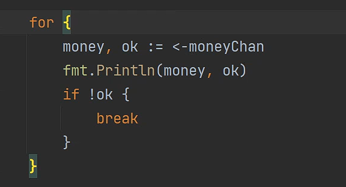

Go 协程：Channel 与 select
协程
Goroutine是Go运行时管理的轻量级线程
在go中，开启一个协程是非常简单的
startTime := time.Now()
fmt.Println(time.Since(startTime))
Go复制代码
package main
import (
"fmt"
"time"
)
func sing() {
fmt.Println("唱歌")
time.Sleep(1 * time.Second) // 数字 * 时间单位 --> 时间
fmt.Println("唱歌结束")
}
func main() {
go sing()
go sing()
go sing()
go sing()
time.Sleep(2 * time.Second)
}
如果我把这个主线程中的延时去掉之后，你会发现程序没有任何输出就结束了
这是为什么呢
那是因为主线程结束协程自动结束，主线程不会等待协程的结束
最后打印的时候 ,主线程运行一下, 全部的子线程都在跑自己内部的方法 会强行制止
WaitGroup
我们只需要让主线程等待协程就可以了，它的用法是这样的
wait = sync.WaitGroup{} //官方sync包中定义的结构体
var wait = sync.WaitGroup{} / var wait sync.WaitGroup
创建一个初始计数为 0 的 WaitGroup。
Add(1) → 计数器 +1
Done() → 计数器 -1
wait.Wait()
表示当前 goroutine 在这里阻塞，直到 WaitGroup 的计数器变为 0。
Go复制代码
func main() {
var wait sync.WaitGroup
wait.Add(4)
go shopping("ws1", &wait)
go shopping("ws2", &wait)
go shopping("ws3", &wait)
go shopping("ws4", &wait)
wait.Wait()
}
func shopping(name string, wait *sync.WaitGroup) {
fmt.Println(name + " is shopping")
wait.Done()
}
package main
import (
"fmt"
"sync"
"time"
)
var (
wait = sync.WaitGroup{} //官方sync包中定义的结构体
)
func sing() {
fmt.Println("唱歌")
time.Sleep(1 * time.Second)
fmt.Println("唱歌结束")
wait.Done()
}
func main() {
wait.Add(4) //需要实现的
go sing()
go sing()
go sing()
go sing()
wait.Wait()
fmt.Println("主线程结束")
}
channel
一个结构体指针 ;
var money_Copy = make(chan int) 创建信道
: 方法内部 money_Copy <- money 传回数据
主线程 : money, ok := <-money_Copy 获取到数据
var wait sync.WaitGroup 创建一个 官方的协程工具
wait.add( 数字 ) --> 计数器 ; 主线程
go func(){
wait.Wait() --> 等待协程全部结束后运行 否则会直接死锁 --> add(0)
close(moneyChan) --> 关闭信道
}()
有没有想过一个问题，我在协程里面产生了数据，咋传递给主线程呢？
或者是怎么传递给其他协程函数呢？
这个时候 channel来了
func main() {
var wait sync.WaitGroup
wait.Add(4)
go shopping("ws1", 2, &wait)
go shopping("ws2", 3, &wait)
go shopping("ws3", 4, &wait)
go shopping("ws4", 5, &wait)
//2. 启动一个协程：等所有任务完成 → 关闭通道
最后的小括号 --> 将创建出的匿名方法直接执行
go func(){
wait.Wait()
close(moneyChan)
}()
for {
money, ok := <-money_Copy
fmt.Println(money, ok)
if !ok {
break
}
} //还是会报错 , 消息通道被阻塞 , 需要添加使用 go func 协程函数
wait.Wait() //修改逻辑
}
// 3. 主协程 阻塞读取通道（直到通道关闭才退出）
var money_Copy = make(chan int)
func shopping(name string, money int, wait *sync.WaitGroup) {
fmt.Println(name + " is shopping")
time.Sleep(1 * time.Second)
fmt.Println(name + fmt.Sprintf("%d", money) + " is shopping")
money_Copy <- money
wait.Done() --> 告诉协程这个逻辑已经结束
}

基本定义
Go复制代码
package main
import "fmt"
func main() {
var c chan int // 声明一个传递整形的通道
// 初始化通道
c = make(chan int, 1) // 初始化一个 有一个缓冲位的通道
c <- 1
//c <- 2 // 会报错 deadlock
fmt.Println(<-c) // 取值
//fmt.Println(<-c) // 再取也会报错 deadlock
c <- 2
n, ok := <-c
fmt.Println(n, ok)
close(c) // 关闭信道
c <- 3 // 关闭之后就不能再写或读了 send on closed channel
fmt.Println(c)
}
当然，在同步模式下，channel没有任何意义
需要在异步模式下使用channel，在协程函数里面写，在主线程里面接收数据
Go复制代码
package main
import (
"fmt"
"sync"
"time"
)
var moneyChan = make(chan int) // 声明并初始化一个长度为0的信道
func pay(name string, money int, wait *sync.WaitGroup) {
fmt.Printf("%s 开始购物\n", name)
time.Sleep(1 * time.Second)
fmt.Printf("%s 购物结束\n", name)
moneyChan <- money //向信道中存入数据
wait.Done()
}
// 协程
func main() {
var wait sync.WaitGroup
startTime := time.Now()
// 现在的模式，就是购物接力
//shopping("张三")
//shopping("王五")
//shopping("李四")
wait.Add(3)
// 主线程结束，协程函数跟着结束
go pay("张三", 2, &wait)
go pay("王五", 3, &wait)
go pay("李四", 5, &wait)
go func() {
defer close(moneyChan)
// 在协程函数里面等待上面三个协程函数结束
wait.Wait()
}()
for {
money, ok := <-moneyChan
fmt.Println(money, ok)
if !ok {
break
}
}
//time.Sleep(2 * time.Second)
fmt.Println("购买完成", time.Since(startTime))
fmt.Println("moneyList", moneyList)
}
如果这样接收数据不太优雅，那还有更优雅的写法
Go复制代码
for money := range moneyChan {
moneyList = append(moneyList, money)
}
如果通道被close，for循环会自己结束，十分优雅
select
如果一个协程函数，往多个channel里面写东西，在主线程里面怎么拿数据呢？
go为我们提供了select，用于异步的从多个channel里面去取数据
Go复制代码
package main
import (
"fmt"
"sync"
"time"
)
var moneyChan1 = make(chan int) // 声明并初始化一个长度为0的信道
var nameChan1 = make(chan string) // 声明并初始化一个长度为0的信道
var doneChan = make(chan struct{}) // 声明一个用于关闭的信道
func send(name string, money int, wait *sync.WaitGroup) {
fmt.Printf("%s 开始购物\n", name)
time.Sleep(1 * time.Second)
fmt.Printf("%s 购物结束\n", name)
moneyChan1 <- money
nameChan1 <- name
wait.Done()
}
// 协程
func main() {
var wait sync.WaitGroup
startTime := time.Now()
wait.Add(3)
// 主线程结束，协程函数跟着结束
go send("张三", 2, &wait)
go send("王五", 3, &wait)
go send("李四", 5, &wait)
go func() { --> 多个协程
defer close(moneyChan1)
defer close(nameChan1)
defer close(doneChan)
wait.Wait()
}()
var moneyList []int
var nameList []string
var event = func() {
for { --> 多协程使用 for + select
select {
case money := <-moneyChan1:
moneyList = append(moneyList, money)
case name := <-nameChan1:
nameList = append(nameList, name)
case <-doneChan: --> 不接受任何信息 --> 使用close == 发送消息给信道--> 运行 case .关闭程序
return --> 退出 event 函数
}
}
}
event()
fmt.Println("购买完成", time.Since(startTime))
fmt.Println("moneyList", moneyList)
fmt.Println("nameList", nameList)
}
协程超时处理
Go复制代码
package main
import (
"fmt"
"time"
)
var done = make(chan struct{})
//创建一个【空结构体通道】，专门用来发「通知 / 信号」，不存任何数据！
func event() {
fmt.Println("event执行开始")
time.Sleep(2 * time.Second)
fmt.Println("event执行结束")
close(done)
}
func main() {
go event()
select {
case <-done:
fmt.Println("协程执行完毕")
case <-time.After(1 * time.Second):
fmt.Println("超时")
return
}
}
参考文档
go channel https://zhuanlan.zhihu.com/p/643013131
go select https://zhuanlan.zhihu.com/p/617487667